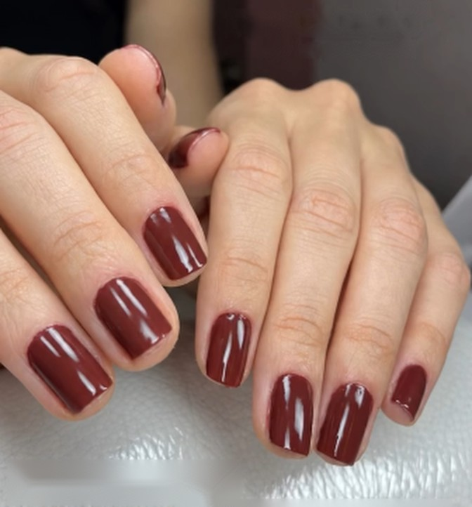
Manicure tradicional
Para manter as unhas naturais cuidadas e escolher uma nova cor.
ConsulteAtendimento Nailux
Atendimento personalizado em um espaço acolhedor no Água Verde, Curitiba.
Na Nailux, cada momento é feito com atenção aos detalhes, para você se sentir bem do começo ao fim.
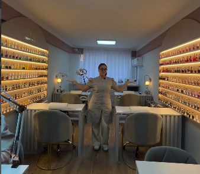
Um atendimento pensado para o seu momento.
Compartilhe suas inspirações e preferências.
Um tempo reservado para você desacelerar.
Em Curitiba, em um espaço acolhedor.
Conte para a Nailux o que você imagina e encontre o atendimento ideal para o seu momento.

Para manter as unhas naturais cuidadas e escolher uma nova cor.
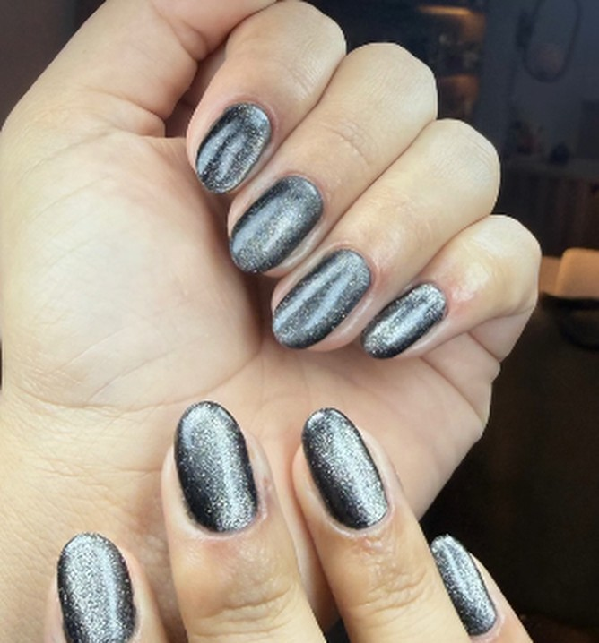
Do clássico ao criativo: compartilhe suas referências com a Nailux.
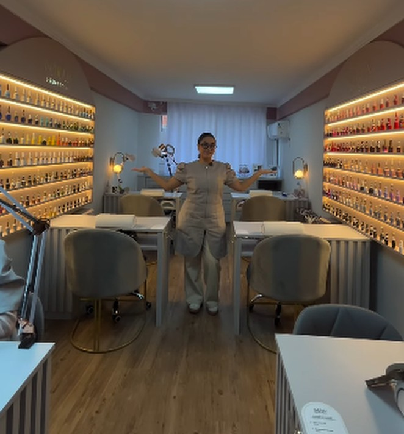
Fale com a equipe para encontrar o melhor horário para você.
Alguns trabalhos e referências para o seu próximo momento.
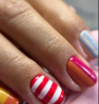
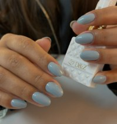
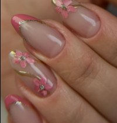
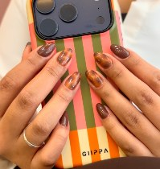
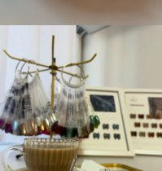
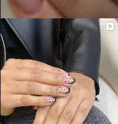
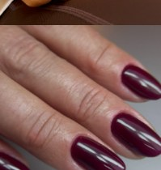
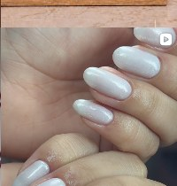
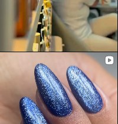
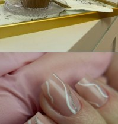
Envie sua preferência. A equipe Nailux confirma a disponibilidade com você pelo WhatsApp.
Envie sua preferência pelo WhatsApp. A equipe Nailux confirma a disponibilidade com você.
A Nailux Esmalteria fica na Rua Palmeiras, 26, no Água Verde, em Curitiba.
Sim. Conte sua ideia e envie suas referências pelo WhatsApp ao solicitar o atendimento.
Visite o Instagram @esmalterianailux.